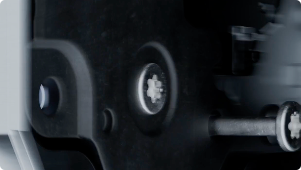
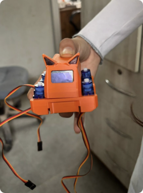
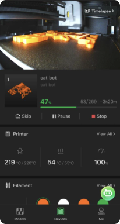
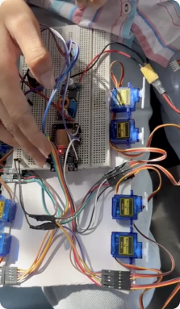
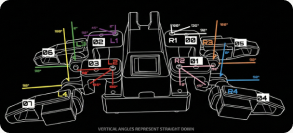
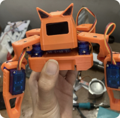
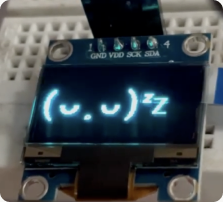
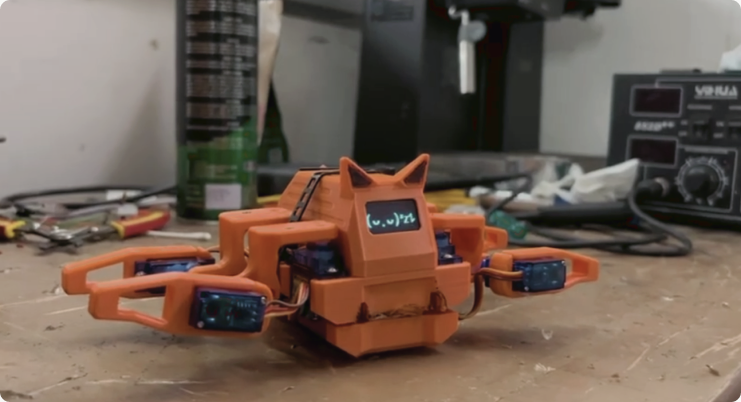
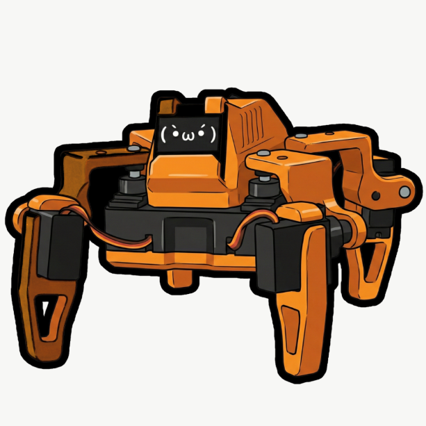

ROBOTICS × PRODUCT DESIGN
Moshi
Designing a small robot around movement, interaction, and personality.
TL;DR
Moshi is a small robotic companion built around physical movement and interaction.
The project brought together industrial design, electronics, interaction, fabrication, and embedded systems, turning a technical robotics problem into a physical product with a recognizable character.
My work focused on the product form, physical design, interaction thinking, and prototyping.
Background
Robots don't just need to work. They need to communicate.
A robot can technically perform an action without making the interaction understandable.
For Moshi, the challenge was to think about the robot not simply as a collection of electronics, motors, and code, but as something a person could read, understand, and interact with.
Problem
How do you give hardware a personality without compromising its function?
The form had to accommodate electronics, movement, structural requirements, and fabrication constraints.
At the same time, it needed to feel approachable rather than purely mechanical.
Process
Designing Moshi
-
Designing around the hardware
The physical form had to work with the electronics rather than treating the enclosure as something added at the end.
ESP32, Wi-Fi, OLED, motors, wiring, and structural components all became constraints in the design.
-
Form follows movement
Because Moshi is a moving robot, its proportions and geometry were considered alongside the way its body moves.
The design therefore became a balance between:
Structure → Movement → Electronics → Character
-
Prototyping the physical form
Digital models were translated into physical prototypes through 3D printing.
This made it possible to evaluate proportions, assembly, clearances, and the relationship between individual components.






Final Product
Moshi
01 The body
A compact enclosure designed around the internal electronics and mechanical system.
02 The face / display
The OLED display gives Moshi a simple visual channel for communicating state and interaction.
03 Movement
The mechanical system allows Moshi to physically respond rather than relying entirely on a screen-based interface.
04 Prototype
The final physical prototype brought together the CAD, electronics, fabrication, and interaction system.

Reflections
Physical interfaces have constraints digital interfaces don't.
A screen can change instantly. A physical product has weight, tolerances, assembly, material, and mechanical limitations.
Moshi made those constraints part of the design process rather than something to solve afterwards.
